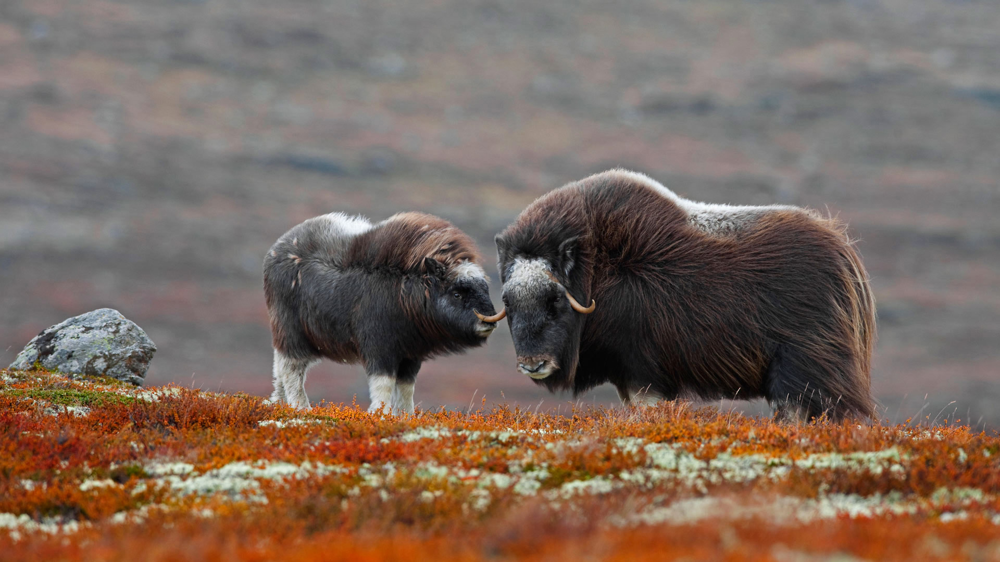

Welcome
This website is made by Adrian Lona and explains about Dovrefjell, it´s location and how it is conserved. It is a very safe trip in Dovrefjell.
Sources
“Dovrefjell.” Wikipedia, Wikimedia Foundation, 20 Oct. 2017, en.wikipedia.org/wiki/Dovrefjell. https://en.wikipedia.org/wiki/Dovrefjell
